contributor: 김동옥
- AI로 그림을 그리는 것이 더 이상 신기하게 느껴지지 않습니다.
- 아직 전체적으로는 소수이지만 AI 그림 공모전, 전시회가 제법 눈에 띕니다.
- 여러 그림 생성 AI 중 입문용으로 가장 좋은 MS Designer를 소개합니다.
1. Microsoft Designer
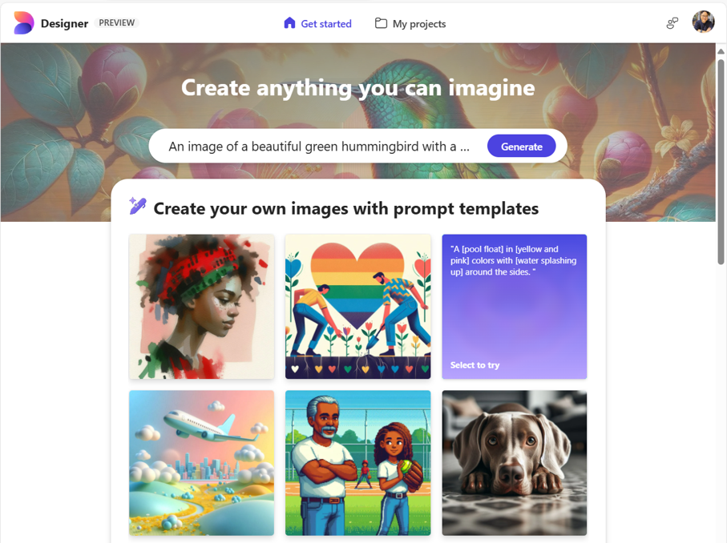
- Microsoft Designer를 입문용으로 가장 좋은 그림 생성 AI 도구라고 소개하는 데는 이유가 있습니다.
- 한국어로 그림을 그릴 수 있으며, 무료입니다.
- DALL.E3를 사용해 품질이 준수하고 대기업의 제품이라 안정성이 있습니다.
- 예제 프롬프트를 풍부하게 제공해서 처음 보는 사람도 심리적인 장벽을 낮출 수 있습니다.
- 윈도우 사용자는 별도의 회원 가입 절차도 필요치 않습니다. 윈도 로그인 계정이 MS 계정이니까요.
- 웹 버전과 모바일 앱을 동시에 지원합니다.
- 이번 글에서는 갤럭시 등 안드로이드 앱버전 기준으로 설명을 이어가겠습니다.
- 이해를 돕기 위해 캡처한 화면을 사용해서 그림이 많이 긴 점 양해바랍니다.
2. 설치
- 안드로이드 사용자는 Google Play를 통해 Microsoft Designer를 설치할 수 있습니다.
- 무료이고 3세부터 사용할 수 있으므로 아이들이 갖고 놀아도 안전합니다.
- 그만큼 선정성, 폭력적 이미지에 대한 필터링이 강하게 걸려 있습니다.
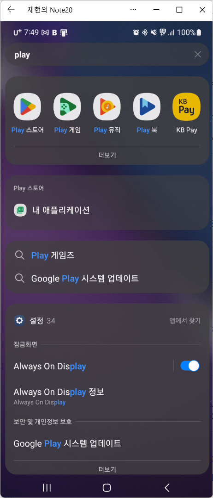
- 아이콘 그림과 Microsoft Designer라는 이름을 확인하고 설치합니다.
- 다른 앱을 실수로 설치하지 않도록 유의합니다.
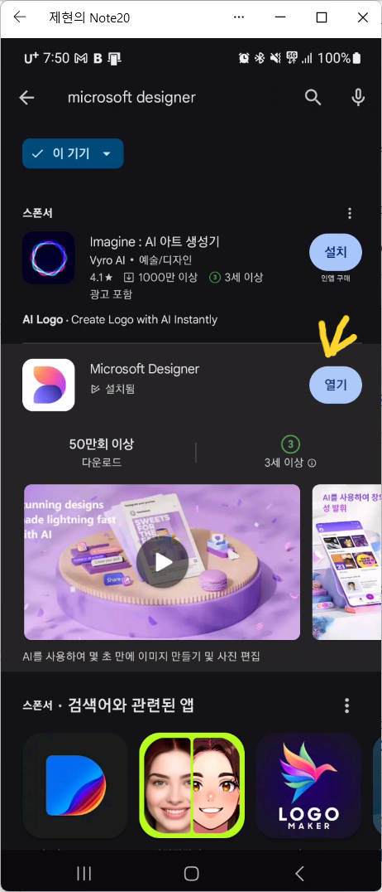
3. 실행
- 설치가 끝나면 화면 하단 왼쪽 아래 세로선 세 줄(|||) 버튼을 눌러 앱 목록을 봅니다.
- 설치된 앱은 기본적으로 이름으로 정렬됩니다.
- 화면을 좌우로 넘겨 Microsoft Designer를 찾아 길게 누르고 홈 화면에 추가를 선택합니다.
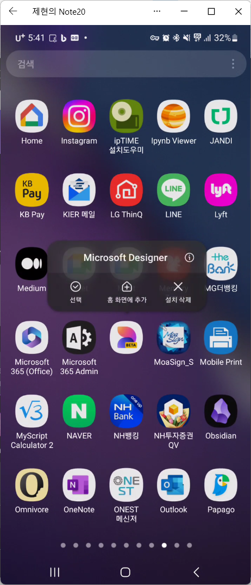
- 손가락 끝에 붙은 아이콘을 바탕화면의 빈 곳에 내려 놓습니다.
- 이제 앞으로 스마트폰 화면에서 이 아이콘만 누르면 Microsoft Designer가 실행됩니다.
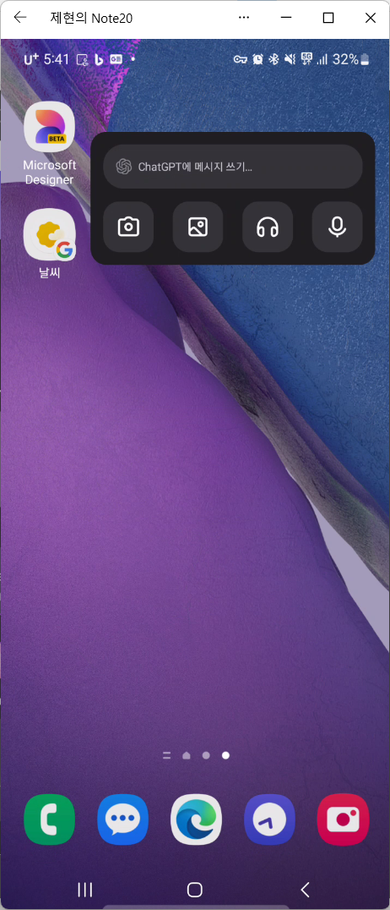
- 앱을 실행하면 다음과 같은 화면을 볼 수 있습니다.
- 저는 영어로 보이지만 설정에 따라 한국어로 보일 수 있습니다.
- 언어는 달라도 그림만으로 확인할 수 있으니 따라가 봅시다.
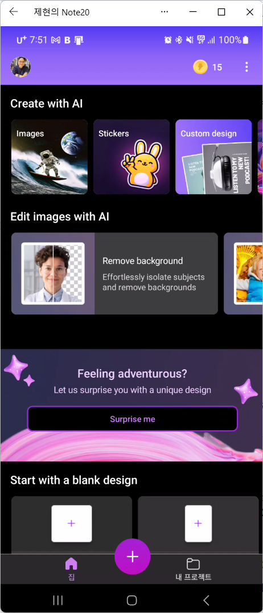
3.1. 그림 그리기
- 왼쪽 위 Images라고 쓰인 곳을 터치합니다.
- 우주인이 파도타기를 하는 그림입니다.
- 위에 있는 넓은 빈 칸 안에 뭐라뭐라 써있고, 아래 다양한 그림들이 있습니다.
- 그릴 그림의 장면을 빈 칸에 말로 묘사하면 그림이 생성됩니다.
3.1.1. 자유 그림 그리기
- 여기 보이는 그림들이 모두 Microsoft Designer에서 그려진 그림입니다.
- 그림 아래 있는 말들로 그려진 그림입니다.
- 이렇게 AI에게 요청을 지시하는 말을 프롬프트(prompt)라고 합니다.
- 아무 그림이나 자유롭게 먼저 그려봅시다.
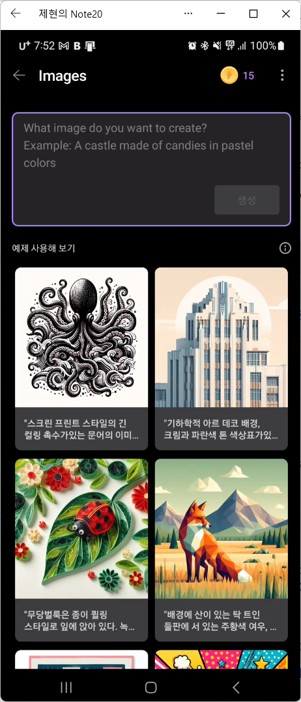
- 머리에 그림을 하나 떠올리고, 여기에 말로 풀어서 넣어봅니다.
- 저는 햇빛을 받으며 졸고 있는 고양이 사진이라고 넣었습니다.
- 입력을 마치면 바로 아래에 있는 보라색 생성 버튼을 터치합니다.
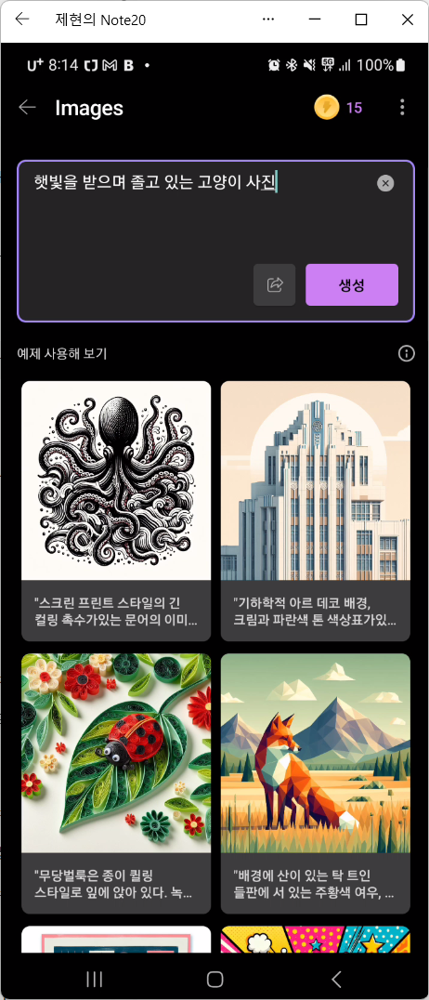
- 잠시, 20여초 가량 지나면 고양이 사진이 생겨납니다.
- 최대 총 네 장의 그림이 한 번에 생깁니다.
- 화면을 쓸어올리며 원하는 그림을 찾아보시고, 모두 마음에 들지 않으면 화면 왼쪽 위에 있는 뒤로 가기(←)를 눌러 다시 생성하면 됩니다.
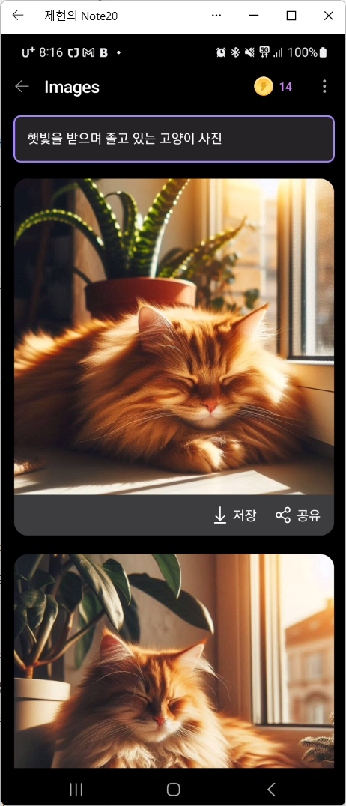
화면 오른쪽 위를 보면 황금색 동전 모양의 그림이 있고 옆에 14라는 숫자가 있습니다.
아까는 15였을 것입니다. 한 번 그릴 때마다 1씩 줄어듭니다.
하루에 15개씩 주어지는 부스트(boost)라는 것으로, 0이 된다고 그림을 못 그리지는 않습니다.
다만 그림이 만들어지는 속도가 많이 느려지는 정도입니다.
사용 갯수에 무관하게 다음날 다시 15개로 돌아옵니다.
걱정 마시고 마음껏 사용하시기 바라며, 충전하는 방법은 이 글에서는 생략합니다.
간단히만 말씀드리면 돈을 주고는 살 수 없고, MS 제품을 많이 사용해 받는 포인트로 충전 가능합니다.
3.1.2. 틀을 활용해 그림 그리기
- AI 그림을 시작하시는 분들이 가장 어려워하는 것이 프롬프트 작성입니다.
- 소설을 보면 다채로운 광경이 문장들로 묘사되어 있습니다.
- 이와 같이 머리 속 이미지를 말로 풀어내면 되는데, 훈련되지 않으면 어렵습니다.
- ChatGPT 등에게 프롬프트를 요청하는 방법이 있습니다만 선호하지 않습니다.
- 가급적 다양한 시험을 하며 AI와 소통을 늘리는 것이 장기적으로 좋기 때문입니다.
- Microsoft Designer는 초보자들을 위한 틀(template)을 제공합니다.
- Images를 눌러 들어간 화면에 보이는 그림들 중 하나를 터치해보세요.
- 저는 문어 그림 옆에 있는 건물 그림을 눌렀습니다.
- 프롬프트 입력 창에 이 그림을 그리는데 사용된 프롬프트가 보입니다.
- 일부 단어에 구멍이 뚫려 있고 원래의 단어가 희미하게 보이는데,
- 여기에 다른 말을 넣고 생성 버튼을 누르면 바뀐 프롬프트로 그림이 생겨납니다.
- 기하학적이라는 말을 제외하고 모든 말을 바꿔넣어 보았습니다.
- 크림과 파란색 톤은 빨강과 파란색 톤으로,
- 년대를 의미하는 1920의는 2020년대로,
- 건물은 고양이로 바꿔넣은 후 생성을 눌렀습니다.
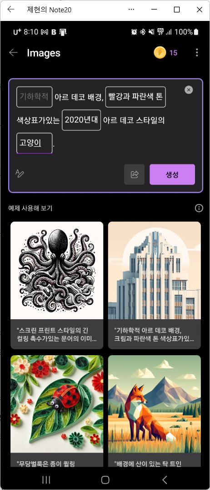
- 잠시 후, 지시한대로 그림이 생성됩니다.
- 전체적으로 빨강과 파란색 톤으로, 기하학적 무늬를 배경으로 현대적인 디자인의 고양이 그림이 그려집니다.
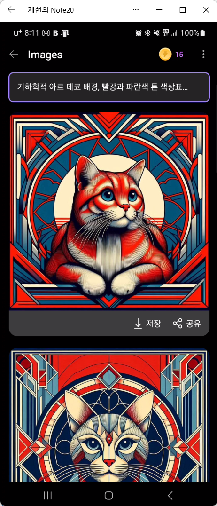
3.2. 그림 저장
- 그림이 마음에 든다면, 그림 아래에 있는 저장버튼을 눌러 휴대전화에 저장할 수 있습니다.
- 이렇게 저장한 그림은 (아직) 저작권은 인정되지 않지만 소유권은 인정됩니다.
- 본인의 목적에 따라 마음껏 사용하실 수 있으며 상업적인 활용도 가능합니다.
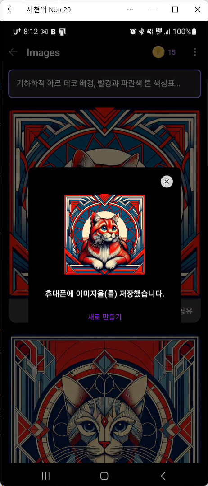
3.2. 스티커 만들기
- 기본적인 그림을 그려봤으니 이제는 조금 다른 그림을 그려봅시다.
- 첫 실행 화면에서 두 번째, Stickers라고 써 있는 곳이 있습니다.
- 노란 토끼가 V를 그리고 있는 장면인데요, 여기를 터치합니다.
- 아까 Image를 눌렀을때와 거의 동일한 화면을 볼 수 있습니다.
- 그러나 아래 있는 예제 그림을 보면 하나같이 단색 배경에, 그림 주변에 하얀 테두리가 있음을 알 수 있습니다.
- 스티커 용지에 인쇄해서 맞추어 오리면 멋진 스티커가 되기도 하지만,
- 단색 배경 부분은 실제로 투명하게 그려져 다른 그림 위에 덮어 사용하기 좋습니다.
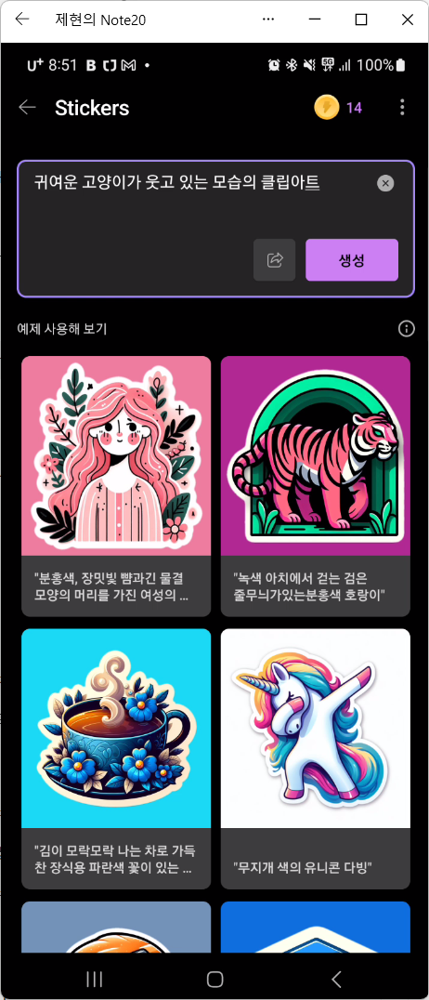
- 여기에 머리 속 이미지를 다시 한번 풀어봅시다.
- 이번엔 귀여운 고양이가 웃고 있는 모습의 클립아트라고 넣었습니다.
- 하얀 배경 위에 고양이가 그려졌습니다만, 말씀드렸듯 실제 배경은 투명합니다.
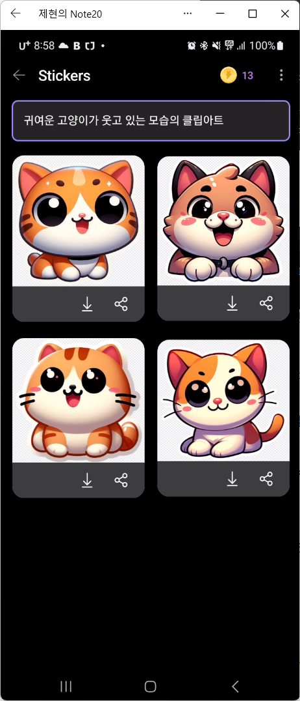
- 그렇기 때문에 다른 이미지 위에 붙여 넣었을 때 자연스럽습니다.
- 꽁꽁 얼어붙은 한강 위로 고양이가 뛰어다니는 모습을 연출한 결과입니다.

- 스마트폰용 Microsoft Designer 앱에는 이 둘 외에도 몇 가지 기능이 더 있습니다.
- 그러나 분량 관계상 여기서 줄이도록 하겠습니다.
- 다른 기능들도 마음껏 클릭해서 시도해보시기 바랍니다.
- 이미지, 또는 스티커를 취향에 맞게, 또는 목적에 맞게 마음껏 사용하시면 좋겠습니다.